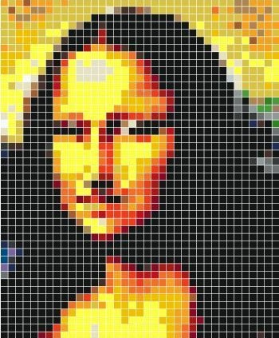

|
Per essere visualizzate e memorizzate, le immagini vanno digitalizzate, cioè convertite in binario.
L'immagine viene prima acquisita da un dispositivo, ad esempio
una fotocamera o uno scanner. Successivamente viene campionata
tramite una griglia, che divide l'immagine in quadratini di uguali
dimensioni chiamati pixel.
La qualità di un'immagine dipende dalla sua risoluzione, ovvero
dal numero di pixel. Quindi, più è alto il numero di pixel di
un'immagine, più questa sarà fedele alla realtà.
Ogni pixel può assumere una certa gamma di colori, cioè 2n bit
colori. Il numero di bit necessari a rappresentare un pixel è detto
profondità. Dopo il campionamento l'immagine viene quantizzata, quindi,
a ogni pixel viene assegnato il colore predominante presente al suo interno e
il colore assegnato viene approssimato al livello più vicino.
A questo punto l'immagine viene digitalizzata: a ogni pixel corrisponde un codice
binario indicante il suo colore (per semplicità per identificare i colori viene
usato il corrispondente esadecimale). Il codice binario dell'immagine viene
scritto prendendo il codice binario di ogni pixel da destra verso sinistra,
dal basso verso l'alto.
|
 |